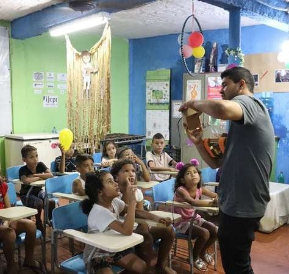
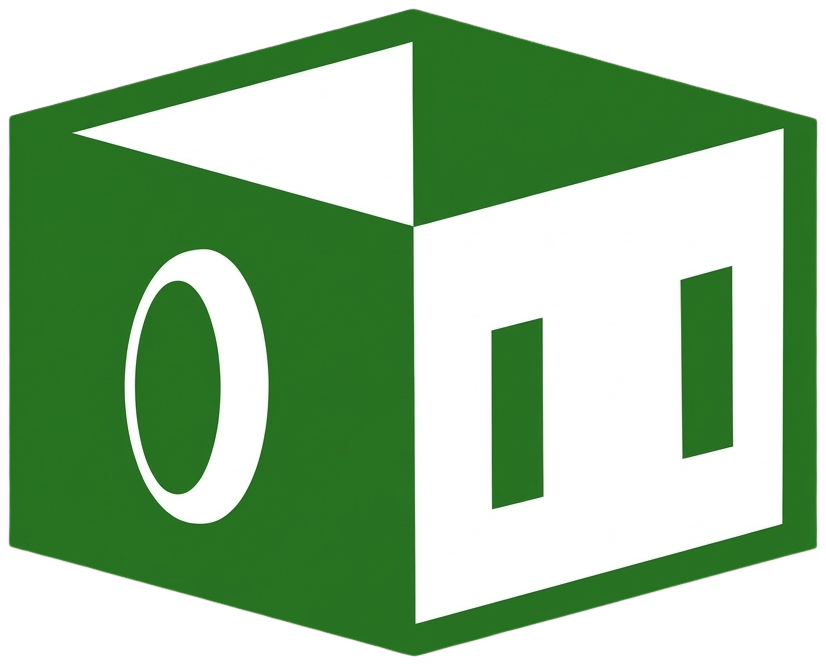
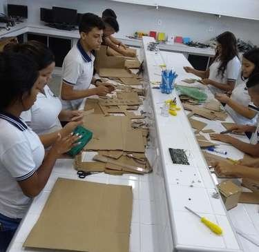
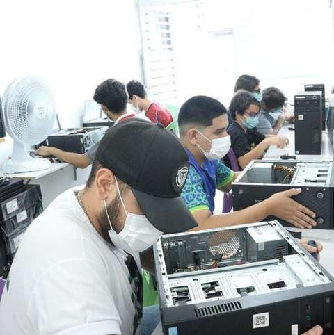
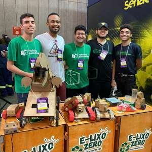
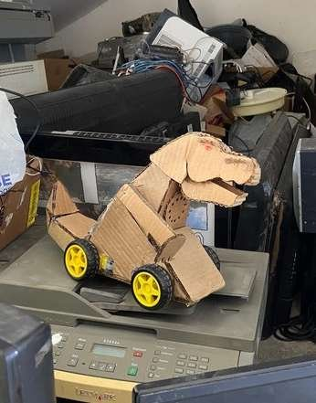
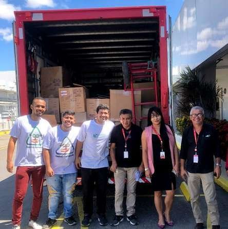
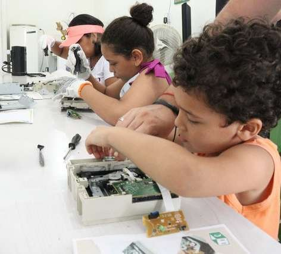

Robótica educacional
Oficinas de robótica sustentável para crianças de 8 a 14 anos, com kits feitos de resíduos reciclados.
Conhecer mais →
Instituto RobóticaTransformamos resíduos eletrônicos em educação tecnológica e sustentável, beneficiando as pessoas que mais precisam.

toneladas de resíduos eletroeletrônicos coletados
crianças e jovens em exposições e oficinas
empresas beneficiadas
pontos de coleta voluntária
Resultados de 2025 · + 2 negócios sociais de tecnologia
QUEM SOMOS
Somos um instituto de Fortaleza dedicado à educação tecnológica, integrando sustentabilidade e inovação para formar cidadãos críticos, criativos e conscientes.

Oficinas de robótica sustentável para crianças de 8 a 14 anos, com kits feitos de resíduos reciclados.
Conhecer mais →
Cursos de informática e manutenção de computadores com equipamentos recuperados.
Conhecer mais →
Exposições interativas, batalhas de robôs e palestras que aproximam a comunidade da tecnologia.
Conhecer mais →Ensinamos
Como um equipamento parado vira aula de tecnologia.
Empresas e pessoas doam equipamentos eletrônicos obsoletos.
O Instituto recebe os resíduos com destinação correta e segura.
Componentes valiosos são separados e viram kits de robótica.
Jovens e comunidades aprendem a usar a tecnologia de forma sustentável.

Linha branca
Geladeiras, fogões, lavadoras, secadoras
Linha marrom
TVs, rádios, câmeras, DVDs
Linha verde
Computadores, impressoras, celulares, laptops
Linha azul
Furadeiras, liquidificadores, batedeiras, ferros
Sede Robótica Sustentável
Rua Francisquinha Portela, 1050 C, Altos · Fortaleza
Ninna Hub
Av. Dom Manuel, 1020 · Centro, Fortaleza
UECE
Av. Dr. Silas Munguba, 1700 · Itaperi, Fortaleza


NA MÍDIA
G1 · Globoplay · Um Só Planeta · O Povo · Tribuna do Ceará · Red Bull Amaphiko 2019
Sua empresa fortalece a gestão ESG, engaja colaboradores e transforma resíduos em educação.
Coleta no local, declaração de doação e relatório ESG anual.
Selo E-Lixo Zero, coleta mensal e 2 eventos por ano.
Marketing ampliado e 4 eventos de robótica por ano.
1 evento por mês, mascote e app para eventos da empresa.